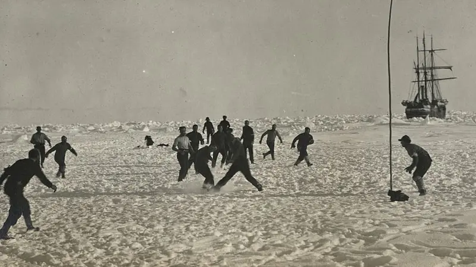

História e Ficha Técnica
Lançado ao mar em 1912 na Noruega, o Endurance foi projetado como um dos veleiros motorizados mais resistentes de sua época, feito sob medida para enfrentar as condições extremas do extremo sul do planeta.
Sob o comando do explorador Sir Ernest Shackleton, o navio partiu em 1914 para a Expedição Transantártica Imperial. No entanto, o mar congelou ao seu redor, deixando a tripulação isolada por meses em uma das histórias de sobrevivência mais impressionantes da navegação.

Legenda:Tripulação do Endurance joga uma partida de futebol no meio do gelo para animar a longa espera até ser resgatada.